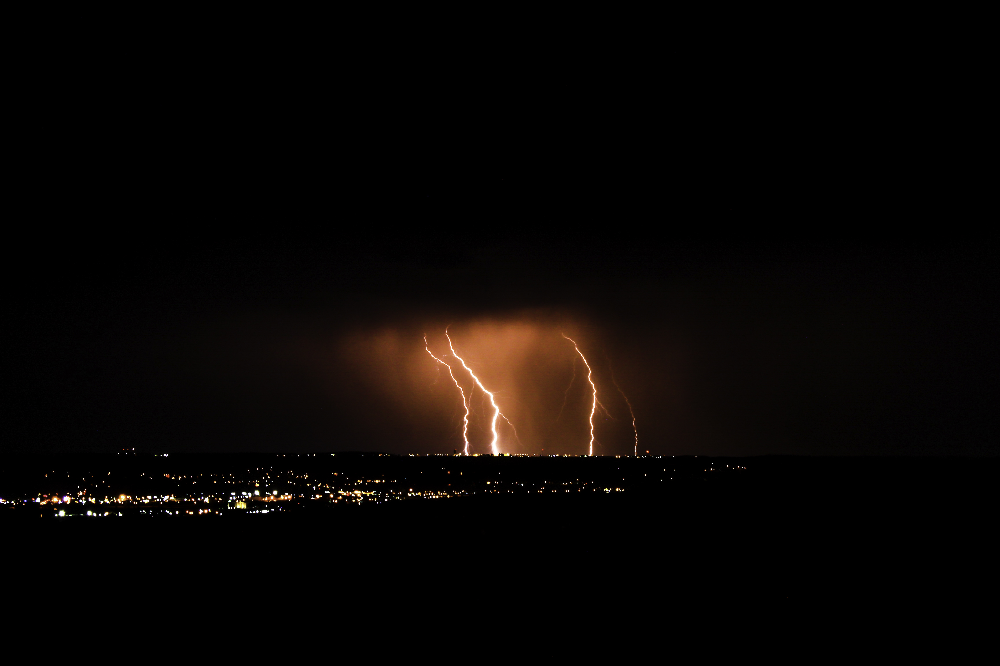

I enjoy camping, hiking, snowboarding and most other types of boarding as well. Wakeboarding has become one of my favorite things to do during the summer. I am really looking forward to enjoying Missoula for my first time this summer. I enjoy taking my camera with me on my adventures, conditions permitting.  I have started to amass an extensive collection of records - mostly rock and roll and hip hop. Music is a definitely one of my joys in life. My favorite record I own at the moment is definitely Flower Boy, the 2017 album from Tyler, The Creator.
I enjoy playing video games on my playstation, mostly Call of Duty or NBA 2k lately. I am also a big fan of Star Wars, including all the new tv shows coming out. The Mandalorian is a fantastic show, but I am most excited for the upcoming Book of Boba which was teased after the most recent episode of the Mandalorian.